JupyterLab
Overview
JupyterLab is a popular web application on which users can create and write their Jupyter Notebooks, as well as explore data, install software, etc. This section will introduce the JupyterLab interface and cover details of JupyterLab Notebooks.
Set Up
The JupyterLab Interface
Running JupyterLab Notebooks
Set Up
To launch the JupyterLab interface in your browser, follow the instructions in Installing and Running Python: Python in Jupyter.
If, instead, you want to follow along using a provided remote JupyterLab instance, launch this notebook via Binder using the launch icon at the top of this page,
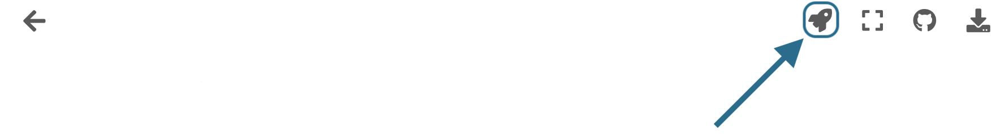
and follow along from there! If launching Binder, take note of the Launcher tab in the upper-left (see interface below). Click there to find yourself in the same interface moving forward, and feel free to refer back to this tab to follow along.
The JupyterLab Interface
Go to your browser and take a look at the JupyterLab interface.
With a base installation of JupyterLab your screen should look similar to the image below.
Notice:
The Menu Bar at the top of the screen, containing the typical dropdown menus: “File”, “Edit”, “View”, etc.
Below that is the Workspace Area (currently contains the Launcher).
The Launcher is a quick shortcut for accessing the Console/Terminal, for creating new Notebooks, or for creating new Text or Markdown files.
On the left is a Collapsible Sidebar. It currently contains the File Browser, but you can also select the Running Tabs and Kernels, the Table of Contents, and the Extensions Manager.
Below everything is the Information Bar, which is context sensitive. We will touch on this more.
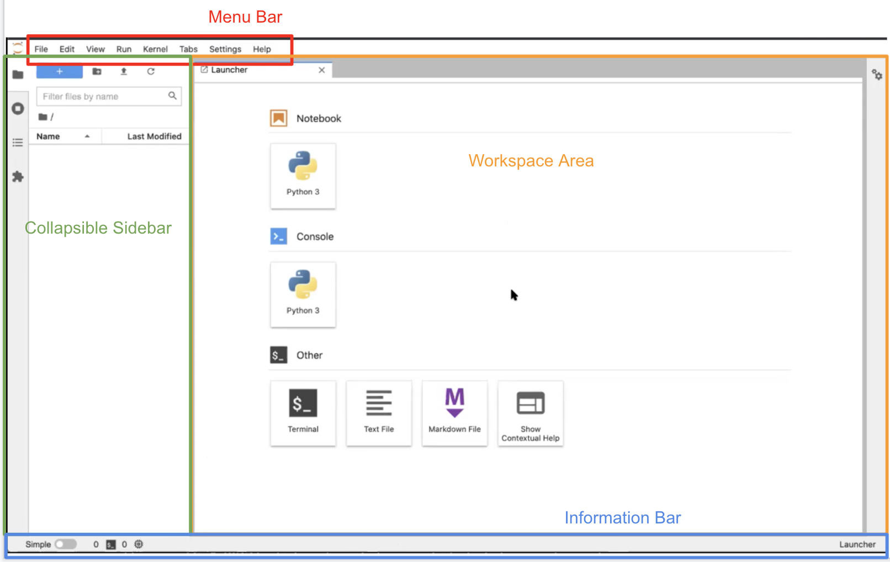
We will now take a closer look at certain aspects and features of the JupyterLab Interface.
Left Sidebar
The Collapsible Left Sidebar is open to the File Browser Tab at launch. Clicking the File Browser Tab will collapse the sidebar or reopen it to this tab.
Within this tab, you will see the “+” button, which allows you to create a new launcher.
Next to that is the “+ folder” button which allows you to create a new folder that then appears below “Name” in the contents of your directory. Double click the folder to enter it, right click the folder for options, or press the “root folder” icon to return to the root directory. The root directory is the directory from which JupyterLab was launched. You cannot go above the root directory.
The “upload” button (looks like an arrow pointing up) allows you to upload files to the current folder.
The “refresh” button refreshes the File Browser.
Below the File Browser Tab is the Running Tabs and Kernels Tab. Currently, this tab doesn’t have much in it. We will revisit this when we have running kernels. Remember that Kernels are background processes, so closing a tab (Terminal or Notebook) doesn’t shut down the kernel. You have to do that manually.
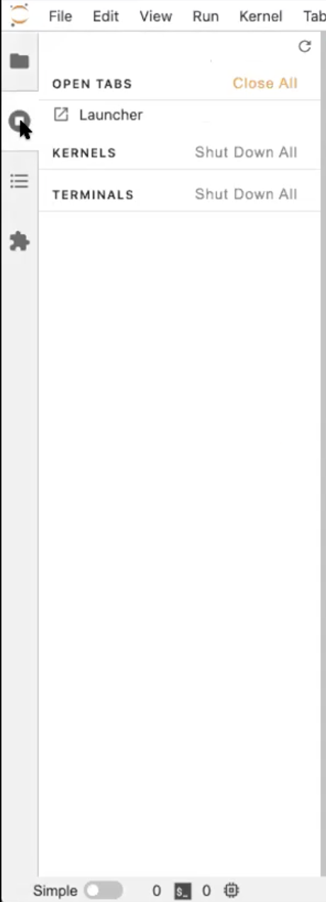{kind=link}
The Table of Contents Tab is auto-populated based on the headings and subheadings used in the Markdown cells of your notebook. It allows you to quickly jump between sections of the document.
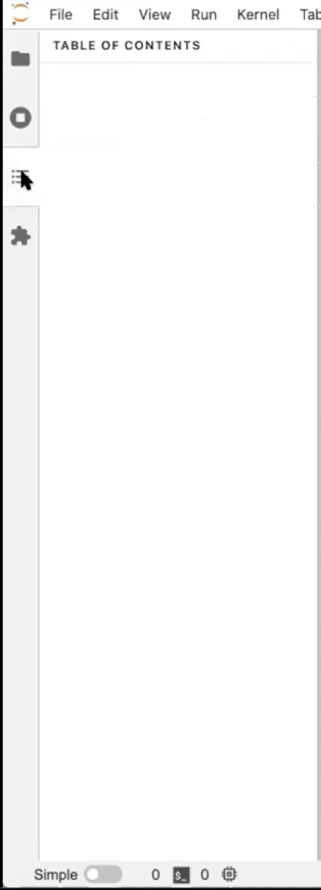{kind=link}
Last is the Extensions Manager Tab where you can customize or enhance any part of JupyterLab. These customizations could pertain to themes or keyboard shortcuts, for example. We will not be covering JupyterLab extensions, but you can read more about them here.
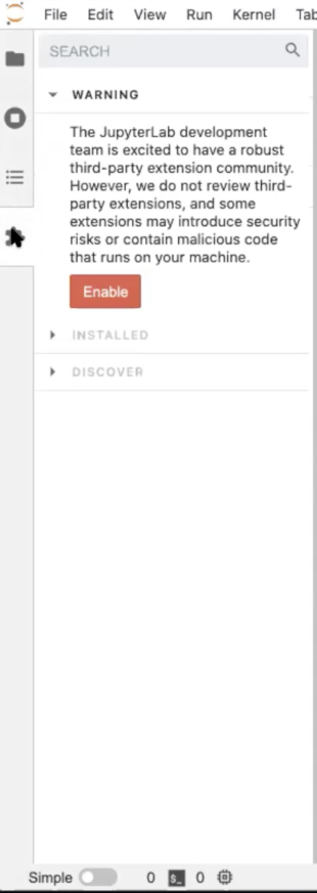{kind=link}
Terminals
Let’s select the Running Tabs and Kernels Tab in the Left Sidebar and see how it changes when we’ve used the Launcher.
Open a Terminal in the Launcher. It should look very similar to the desktop terminal that you initially launched JupyterLab from, but is running from within JupyterLab, within your existing Conda environment, and within the directory you launched JupyterLab from (the same root folder shown in the File Browser Tab). Notice that there is now a Terminal listed in the Running Terminals Tab.
In the terminal you can use your usual terminal commands. For example, in the terminal window, run:
$ mkdir test
Select the File Browser Tab, refresh it, and see that your new folder is there.
In the Terminal Window run:
$ rmdir test
Hit refresh in the File Browser again to see that the directory is gone.
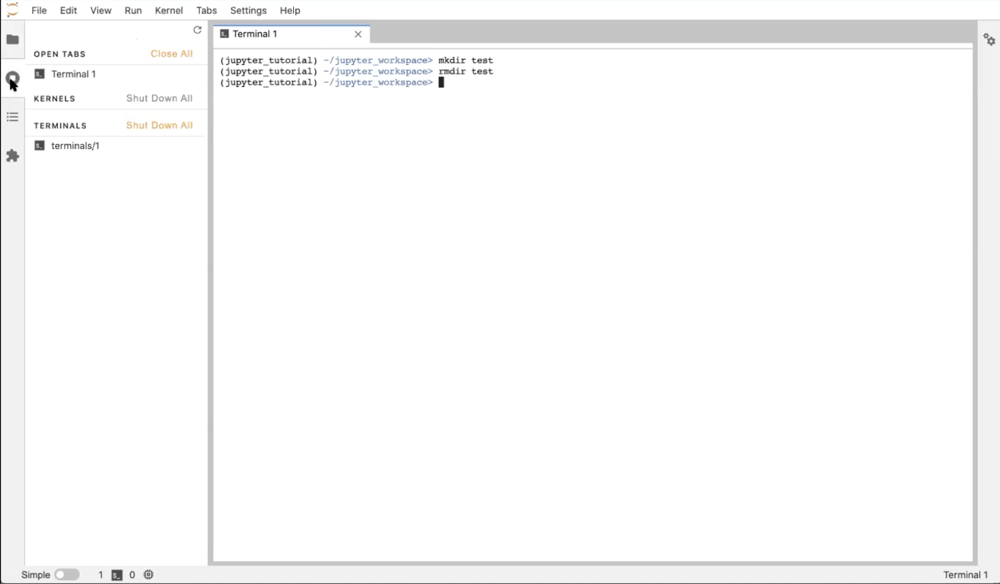
Back with the Running Terminals and Kernels Tab open, click the “X” in your workspace to close the Terminal window. Notice that the Terminal is still running in the background! Click on the terminal in the Running Terminals and Kernels Tab to reopen it (and hit enter or return to get your prompt back). To truly close it, execute in the Terminal window:
$ exit
OR click the “X” shut down button in the Running Terminals tab.
Doing so will return you to the Launcher.
Info
The terminal is running on the local host when JupyterLab is launched locally, and remote host when invoked through Jupyter Hub.
Consoles
Back in the Launcher, click the “Python 3” Console button. There is only one console option right now, but you could install more kernels into your Conda environment.
There will be three dots while the kernel starts, then what loads looks like an IPython console. This is a place to execute Python commands in a stand alone workspace which is good for testing. Notice that the kernel started in the Running Terminals and Kernels tab!
Start in a “cell” at the bottom of the Console window. Type:
i = 5
print(i)
To execute the cell, type Shift+Enter. Notice that the console redisplays the code you wrote, labels it with a number, and displays (prints) the output to the screen.
In the next cell, enter:
s = 'Hello, World!'
print(f's = {s}')
s
The first line of this code designates a string s with the value “Hello, World!”, the second line uses f-formatting to print the string, and the final line just calls up s. The last line in the cell will always be returned (its value displayed) regardless of whether you called print. Type Shift+Enter to execute the cell. Again the output is labeled (this time with a 2), and we see the input code, the printed standard-out statement, and the return statement. The “return value” and the values “printed to screen” are different!
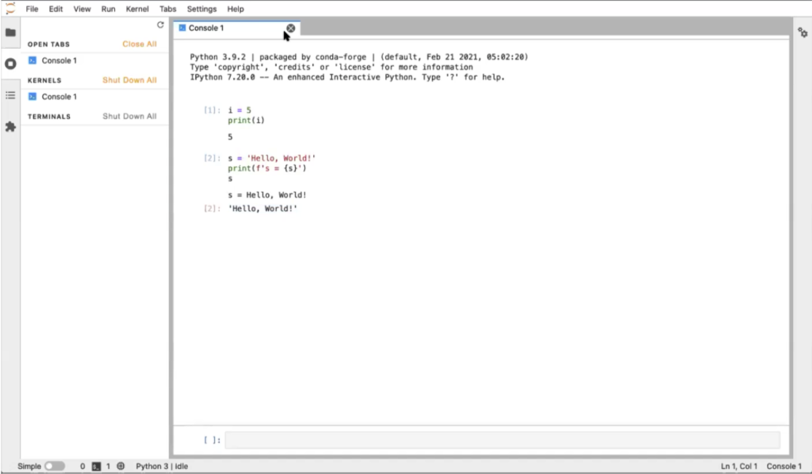
Close the window and shut down the Console in the Running Kernels tab. We’re back to the Launcher again.
Text Editor
Click on the “Text File” button in the Launcher.
Select the File Browser tab to see the new file untitled.txt you created.
Enter this Python code into the new text file:
s = 'Hello, World!'
print(s)
You may notice that the file has a dot instead of an “X” where you’d close it. This indicates that the file hasn’t been saved or has unsaved changes. Save the file (“command+s” on Mac, “control+s” on Windows, or “File▶Save Text”).
Go to the File Browser tab, right-click the new file we created and “Rename” it to hello.py. Once the extension changes to .py, Jupyter recognizes that this is a Python file, and the text editor highlights the code based on Python syntax.
Now, click the “+” button in the File Browser to create a new Launcher. In the Launcher tab, click on the “Terminal” button again to create a terminal. Now you have 2 tabs open: a text editor tab and a terminal tab. Drag the Terminal tab to the right side of the main work area to view both windows simultaneously. Click the File Browser tab to collapse the left sidebar and get more real estate! Alternatively, you could stack the windows one on top of the other.
Run ls in the Terminal window to see the text file we just created. Execute python hello.py in the Terminal window. See the output in the Terminal window.
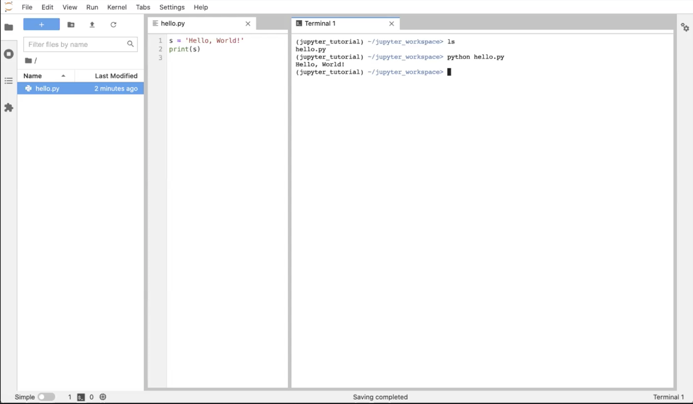
Now, let’s close the Terminal tab and shut down the Terminal in the Running Kernels tab (or execute “exit” in the Terminal itself). You should just have the Text editor window open; now we’re ready to look at Jupyter Notebooks.
Running JupyterLab Notebooks
There are two ways to open a Jupyter Notebook. One way is to select the File Browser Tab, click the “New Launcher” button, and select a Python 3 Notebook from the Launcher. Another way is to go to the top Menu Bar and select “File▶New▶Notebook”. JupyterLab will prompt you with a dialogue box to select the Kernel you want to use in your Notebook. Select the “Python 3” kernel.
If you have the File Browser Tab open, notice you just created a file called Untitled.ipynb. You will also have a new window open in the main work area for your new Notebook.
Let’s explore the Notebook interface:
There is a Toolbar at the top with buttons that allow you to Save, Create New Cells, Cut/Paste/Copy Cells, Run the Cell, Stop the Kernel, and Refresh the Kernel. There is also a dropdown menu to select the kind of cell (Markdown, Raw, or Code). All the way to the right is the name of your Kernel (which you can click to change Kernels) and a Kernel Status Icon that indicates if something is being computed by the Kernel (by a dark circle) or not (by an empty circle).
Below the Toolbar is the Notebook itself. You should see an empty cell at the top of the Notebook. This should look similar to the layout of the Console.
The cell can be in 1 of 2 modes: command mode or edit mode. If your cell is grayed out and you can’t see a blinking cursor in the cell, then the cell is in command mode. We’ll talk about command mode more later. Click inside the box, and the cell will turn white with a blinking cursor inside it; the cell is now in edit mode. The mode is also listed on the info bar at the bottom of the page. The cell is selected if the blue bar is on the left side of the cell.
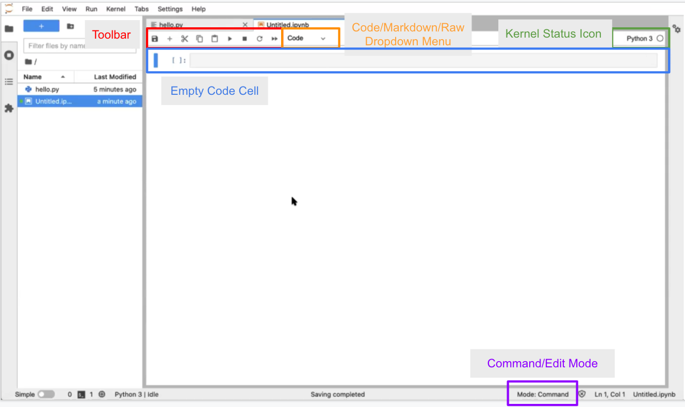
You may move the Notebook over so you can see your text file at the same time to compare, resizing the Notebook window as needed.
Code Cells
Click inside the first cell of the Notebook to switch the cell to edit mode. Enter the following into the cell:
print(2+2)
Then type Shift+Enter to execute the cell.
You’ll see the output, 4, printed directly below your code cell. Executing the cell automatically creates a new cell in edit mode below the first.
In this new cell, enter:
for i in range(4):
print(i)
Execute the cell. A Jupyter code cell can run multiple lines of code; each Jupyter code cell can even contain a complete Python program!
To demonstrate how to import code that you have written in a .py file, enter the following into the next cell:
import hello
Then type Shift+Enter.
This single-line import statement runs the contents of your hello.py script file, and would do the same for any file regardless of length.
Warning
It is generally considered bad practice to include any output in a “.py” file meant to be imported and used within different Python scripts. Such a file should contain only function and class definitions.hello.s
Hit Shift+Enter to execute.
Again, it displays the value of the variable s from the “hello” module we just created. One difference is that this time the output is given its own label [2] matching the input label of the cell (whereas the output from cell [1] is not labelled). This is the difference between output sent to the screen vs. the return value of the cell.
Let’s now import a module from the Python standard library:
import time
time.sleep(10)
Again, hit Shift+Enter.
The time.sleep(10) function causes code to wait for 10 seconds, which is plenty of time to notice how the cell changes in time:
The label of the cell is
[*], indicating that the kernel is running that cellIn the top right corner of the Notebook, the status icon is a filled-in circle, indicating that the kernel is running
After 10 seconds, the cell completes running, the label is updated to [3], and the status icon returns to the “empty circle” state. If you rerun the cell, the label will update to [4]`.
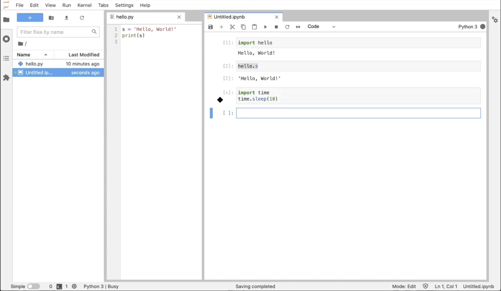
Markdown Cells
Now, with the next cell selected (i.e., the blue bar appears to the left of the cell), whether in edit or command mode, go up to the “cell type” dropdown menu above and select “Markdown”.
Notice that the [ ] label goes away.
Markdown is a markup language that allows you to format text in a plain-text editor. Here we will demonstrate some common Markdown syntax. You can learn more at the Markdown Guide site or in our Getting Started with Jupyter: Markdown content. Click on the cell and enter edit mode; we can now type in some markdown text like so:
# This is a heading!
And this is some text.
## And this is a subheading
with a bulleted list in it:
- one
- two
- three
Then press Shift+Enter to render the markdown to HTML.
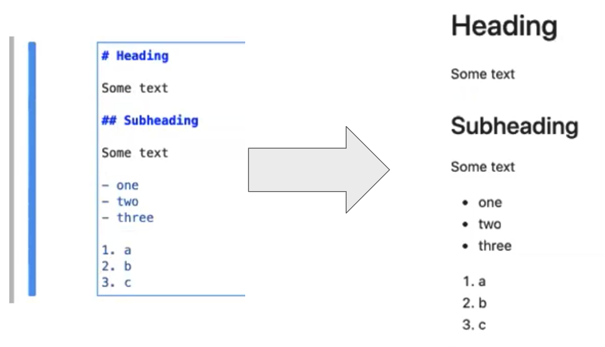{kind=link}
Again, in the next cell, change the cell type to “Markdown”. To demonstrate displaying equations, enter:
## Some math
And Jupyter’s version of markdown can display LaTeX:
$$
e^x=\sum_{i=0}^{\infty} \frac{1}{i!}x^i
$$
When you are done, type Shift+Enter to render the markdown document.
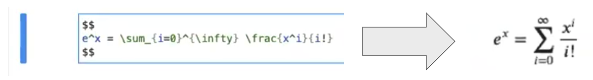{kind=link}
You can also do inline equations with a single “$”, for example
This is an equation: $i^4$.
{kind=link}
Note that the “markdown” source code is rendered into much prettier text, which we can take advantage of for narrating our work in the Notebook!
Raw Cells
Now in a new cell selected, select “raw” from the “cell type” dropdown menu. Again, the [ ] label goes away, and you can enter the following in the cell:
i = 8
print(i)
When you Shift+Enter the text isn’t rendered.
This is a way of entering text/source that you do not want the Notebook to do anything with (i.e., no rendering).
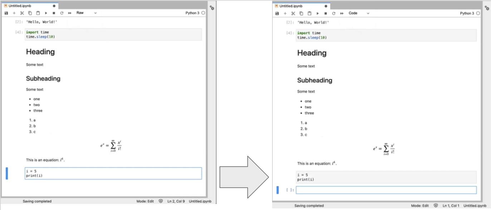
Command Mode Shortcuts
Now, select the “raw” cell you just created by clicking on the far left of the cell.
You are now in “command mode”. The up and down arrows move to different cells. Don’t hit “enter” which would switch the cell to “edit mode.” Let’s explore command mode.
You can change the cell type with y for code, m for markdown, or r for raw.
You can add a new cell above the selected cell with a (or below the selected cell with b).
You can cut (x), copy (c), and paste (v).
You can move a cell up or down by clicking and dragging.
Warning
Cells can be executed in any order you want. You just have to select the cell and Shift+Enter, and select the cells in any order you want. However, if you share your notebook, there is an implicit expectation to execute the cells in the order in which they are presented in the notebook. Be careful with this! If variables are reused or redefined between cells, reordering them could have unintended consequences!
Special Variables
Now, in the empty cell at the end, enter one underscore:
_
This is a special character that means the last cell output. Two underscores means the second to last cell output, and three underscores means the third to last output. You can also refer to the output by label with:
_2
Danger
If the cell you to refer to does not have a return value, this will raise an error.
You can equivalently use the variables Out[2] or In[2] to retrieve the output and input (as a string).
{kind=link}
Shell Commands
In the next code cell, enter the following:
!pwd
The ! allows you to write shell commands. A shell command is a command that is run by the host operating system, not the Python kernel. Executing this cell will “print the working directory” (i.e. your current directory).
You can even use the output of shell commands as input to Python code. For example:
files = !ls
print(files)
Stopping & Restarting the Kernel
All of your commands and their output have been remembered by the kernel. However, sometimes you may get code that takes too long to execute, and you need to stop it. For example, in the next code cell, run:
time.sleep(1000)
You can stop the kernel with the square “stop” button at the top Notebook toolbar. This results in a “KeyboardInterrupt” error.
If you execute a notebook out of order, you can end up in a corrupted state (redefined variables, for example). To start fresh, you should restart the kernel with the circle-arrow button in the toolbar at the top. Now the kernel has forgotten everything, and you’ll need to rerun each cell.
Magics
A “magic” is a Jupyter Notebook command proceded by a % symbol. In the next code cell, enter the following:
%timeit time.sleep(1)
The “%timeit” magic is a timer that runs the command multiple times, measuring how long it takes and gathering timing statistics. Hit Shift+Enter to see it work.
Multiline magics work on entire cells, and these have a double-%. For example, here is a multiline version of the timeit magic:
%%timeit
time.sleep(0.5)
time.sleep(0.5)
Then press Shift+Enter to run it. This will time the entire cell.
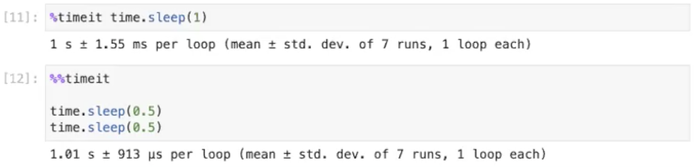{kind=link}
Shutting Down
Before shutting down, save your notebook with the disc icon in the Notebook toolbar. Now, close both tabs (the notebook and the text editor). You’re back to the Launcher.
The notebook kernel is still running, though, so go to the Running Kernels tab and shut it down.
Now we’re done. Go to “File▶Shut Down” to close both your browser tab and JupyterLab itself.
Summary
You are now familiar with the JupyterLab interface and running Jupyter Notebooks. Jupyter is popular for allowing you to intersperse Markdown text or equations between code cells. Jupyter offers some functionality that a Python script does not: certain keyboard shortcuts, special variables, shell scripting, and magics.